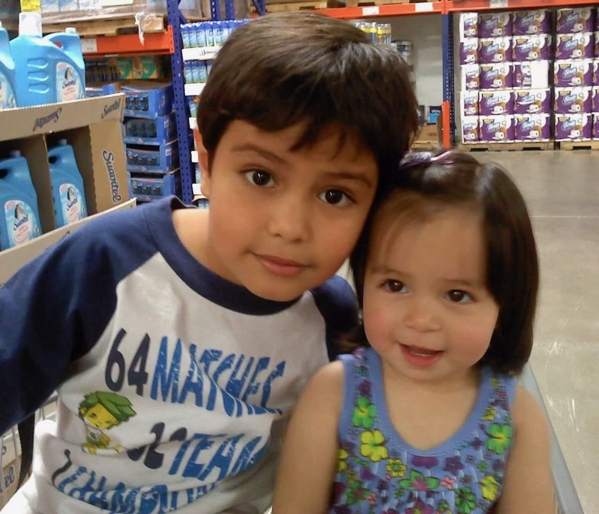

Hola, mi nombre es Diego Morales y esta es mi biografía.
Nací un 9 de abril del año 2005, en el hospital Ginecológico de San Salvador. Actualmente tengo 19 años y soy estudiante de la carrera de Ingenieria de Software y Negocios Digitales en la Escuela Superior de Economía y Negocios situada en El Salvador.


Educación
Mi educación comenzó en el Kinder Amiguitos, situado en la Alameda Juan Pablo II. Ahí entré en pre-kinder a la edad de 4 años y también hice kinder-4 y kinder-5. Luego, me pasé al Liceo Salvadoreño empenzado preparatoría y pasé ahí toda mi vida hasta segundo año de bachillerato. Seguido a eso, tuve que tomar una de las decisiones más importantes de mi vida y decidí estudiar en la ESEN (la verdad era mi unica opción). Escogí la carrera de Ingenieria de Software e ingresé en el año 2023, sigo estudiando ahí hasta este momento.

Deportes
Toda mi vida he sido una persona amante de los deportes. Desde pequeño comencé a practicar deportes que me gustaron, entre los cuales están Taekwondo, basketball, futbol y atletismo.
Comencé practicando Taekwondo en preparatoria, pasé ahí tres años más donde gané muchas medallas y competencias. Luego, comencé a entrenar basketball desde cuarto grado hasta graduarme, fuí capitán y ganamos competencias nacionales y colegiales. Además, jugué futbol toda mi vida desde pequeño pero nunca fuí parte de un equipo formal. Finalmente, pratiqué atletismo casí 2 meses, pero obtuve una lesión que me impidió seguir practicando.
Mis equipos favoritos son el FC Barcelona y los Golden State Warriors. He sido fan de ellos toda mi vida.

Logros
A lo largo de mi vida, he recibido muchos reconocimientos y logros por mis trabajos tanto individuales como colectivos. Obtuve diplomas de reconocimiento academico desde primer grado hasta segundo año de manera consecutiva. Además, logré ganar trofeos con mi equipo de basketball desde primer hasta tercer lugar en varias competiciones. Igualmente, de pequeño, en Taekwondo, pude ganar primeros lugares en competencias colegiales. Fui presidente de sección durante varios años y también representante de año en la universidad.
Hobbies
Siempre he sido una persona a la que le gusta estar haciendo algo productivo. Dentro de mis hobbies más importantes están el baile, donde he practicado en Let's Move Dance Studio. Fui a clases de guitarra por un año, pero la verdad no me acuerdo muy bien. Siempre me han gustado los videojuegos, especialmente FIFA. Y además, me gusta escuchar música y hacer ejercicio diario.
Mamá
Marcela de Morales
Ginecologa Obstetra
45 años
Papá
Enrique Morales
Gerente de logistica
46 años
Hermana
Andrea Morales
Estudiante 8vo grado
14 años
Novia
Silvana Umanzor
Estudiante de Derecho
21 años
Mejor Amigo
Guillermo Calderón
Estudiante de Medicina
18 años
Mascota
Molly Morales
1 año
Es muy juguetona
Resumen
Educación
Kinder Amiguitos: 2008 - 2010
Liceo Salvadoreño: 2011 - 2022
ESEN: 2023 - Actualidad
Deportes
Taekwondo: 2011 - 2014
Baloncesto: 2015 - Actualidad
Parte del equipo de baloncesto del Liceo Salvadoreño
Capitan del equipo del Liceo Salvadoreño
Parte del equipo de baloncesto de ESEN
Logros
Diploma de reconocimiento de estudiante 2013 - 2022
Parte de la directiva de estudiantes del Liceo Salvadoreño
Parte de el consejo estudiantil ESEN
Parte del cuadro de honor 1er y 2do año
Hobbies
Let's Move Dance Studio: clases de baile
Practica de deportes
Ir al Gimnasio
Jugar Videojuegos